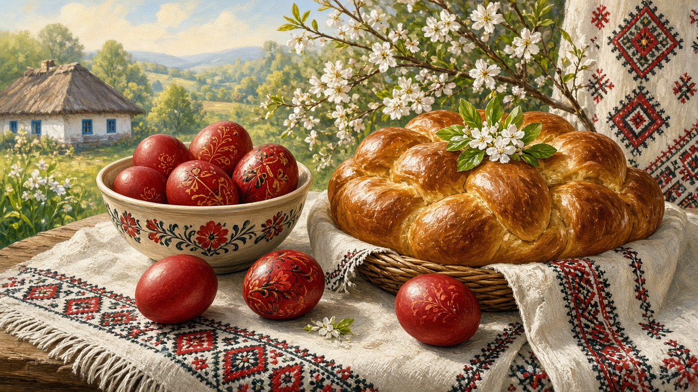

Paște
The night of the Înviere, a candle carried home, and a table that has been waiting. Not a liturgy book. The feast people still mean when they say Paște.

The night, and the morning
People go to church in the dark. Saturday night into Sunday — the Înviere. A candle is lit from the one at the altar, or from a neighbor’s, and you try to keep it alive on the walk home. Some houses still mark a cross of smoke on the lintel. After the Resurrection service the greeting is the same in the yard and in the kitchen: Hristos a înviat — Christ is risen — and the answer Adevărat a înviat. Towns hear it in the street. Villages hear it from the churchyard. You do not need the order of the noapte written down. You need the habit of asking whether this house still walks to the service, or only puts a candle in a glass on the table.
The table
Postul Mare ends. Ouă roșii sit in a bowl — eggs dyed red, often with onion skins, cracked against someone else’s at the table. In Bucovina the same week still means wax-drawn shells, a pattern left pale on a dark ground; that handwork is on crafts. Cozonac if the dough rose. Lamb if the house can, or a simpler soup, green onion, a bit of cheese the fast had been holding back. The point is not a menu. It is that the kitchen opens again after weeks of holding back meat and dairy on the days it kept. Christmas did this once already, in winter. Paște does it when the yard is starting to argue with frost.
Where it sits on the year
The date moves. The moon and the church’s reckoning set it, and it does not always match the Western Easter. Before it, Postul Mare — roughly seven weeks, Holy Week at the end. After it, the movable feasts hang: Înălțarea, Rusalii. The shape of that spring is on the year. Belief, the calendar, and why the date may differ sit on Orthodoxy. This page is only the night, the greeting, and the table that follows.
Houses differ
Some parishes keep the old night densely; some towns finish earlier and eat at noon. Some tables have lamb and two kinds of cozonac; some have red eggs and a soup. A grandmother may still dye every egg. A block apartment may buy a bag of them already colored. Practice varies by house and parish. Nothing here is a rule. It is the feast people still name when spring finally opens.